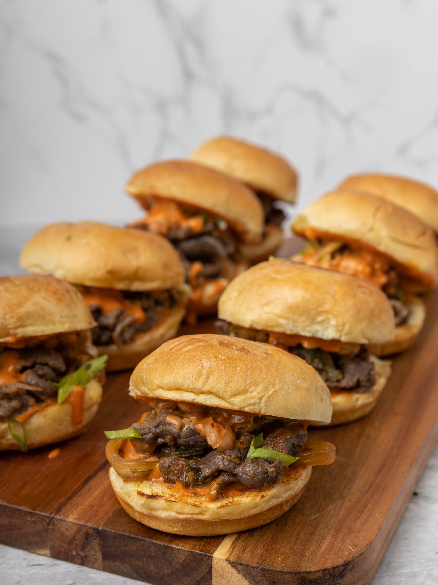

Bulgogi Beef Sliders

Image Source: Yang Yummm - Korean BBQ Sliders
Description
This is a super easy recipe for a basic bulgogi beef, which is then eaten with King's Hawaiian Rolls as mini-burgers, or sliders.
Prepping the beef and marinade only takes 10 or so minutes, and then you have beef ready to go.
It takes more time to heat up a pan to medium-heat than it does to cook the beef to an appropriate level of done-ness. Just get some nice browning on the very outside and the inside should be perfectly medium, even at this thickness.
Then just assemble it with the rolls and some fridge staples and you've got yourself an easy meal!
Ingredients
For the bulgogi:
- Beef, ribeye steak
- Gochujang
- Gochugaru
- Soy sauce
- Sugar
- Rice vinegar
- Oyster sauce
- Salt
- Pepper
For the sliders:
- King's Hawaiian Rolls
- Kewpie mayo
- Pickles of your choosing
Steps
- Cut the ribeye into thin 1/4" strips across the grain
- Season the cut beef with salt and pepper, then add gochujang, gochugaru, soy sauce, sugar, rice vinegar, and oyster sauce and mix to combine
- Let marinate in the fridge for at least 30 minutes
- Cook the beef on medium-high heat, just enough for the outside to brown nicely
- To build a slider, quickly toast one King's Hawaiian roll, then cut it in half
- Add a small amount of Kewpie mayo, add the beef, then top with pickles of your choice
- Enjoy!